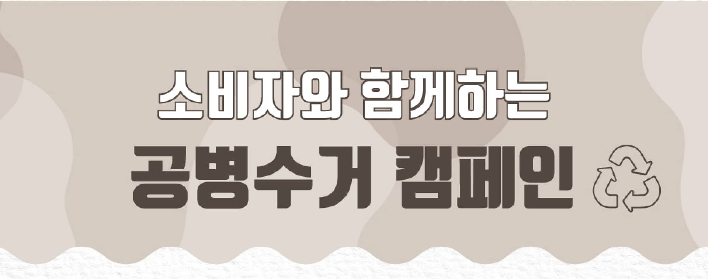
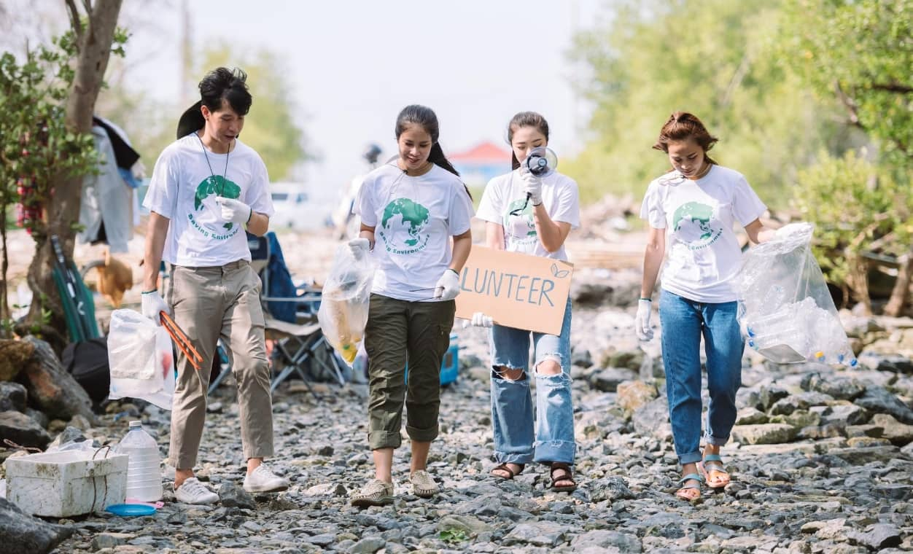
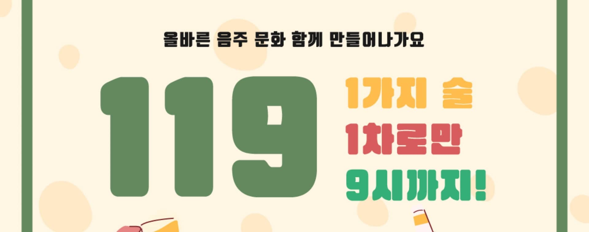

지주는 건강한 사회와 지속가능한 환경을 위해 공익캠페인과 환경보전에 적극 참여하고 있습니다. 함께하는 여러분들의 작은 노력이 큰 변화를 만듭니다.

소비자와 함께하는 공병수거 프로젝트
공병수거 프로젝트에 참여해 환경오염을 줄이고 혜택을 받으세요. 보내주신 공병은 공정을 통해 PCR(Post-Consumer Recycled) 플라스틱 또는 PCR 유리로 재탄생합니다.

세계 물의 날 맞이 하천 플로깅 챌린지
3월 22일 세계 물의 날을 맞아 임직원들은 인근 지역 하천에서 플로깅 챌린지를 진행합니다. 이로써 매년 물의 소중함을 깊이 새기고 환경정화 및 수질개선에 힘쓰고 있습니다.

경남 지방경찰청과 함께하는 건전음주 캠페인
경남지방경찰청과 함께 ‘건전음주문화 조성 및 음주폭력 근절’을 위해 제품에 캠페인 이미지·홍보 문구를 삽입하고 임직원들은 주류판매업소를 찾아 다니며 ‘건전음주캠페인’ 홍보스티커를 부착하는 활동을 펼치고 있습니다.

세계 동물의 날 멸종위기 동식물 에디션 출시
10월 4일 세계 동물의 날을 맞아 우리나라 멸종위기 동식물 리미티드 에디션을 출시하였습니다. 제품 라벨에 QR코드를 통해 멸종위기종 설명과 기부처에 대한 추가적인 정보를 확인하실 수 있으며 기간동안 판매 된 수익금의 일부는 서울환경연합을 통해 환경 보호를 위해 기부됩니다.